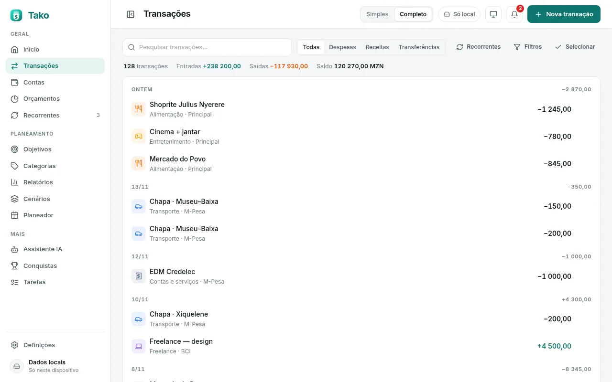
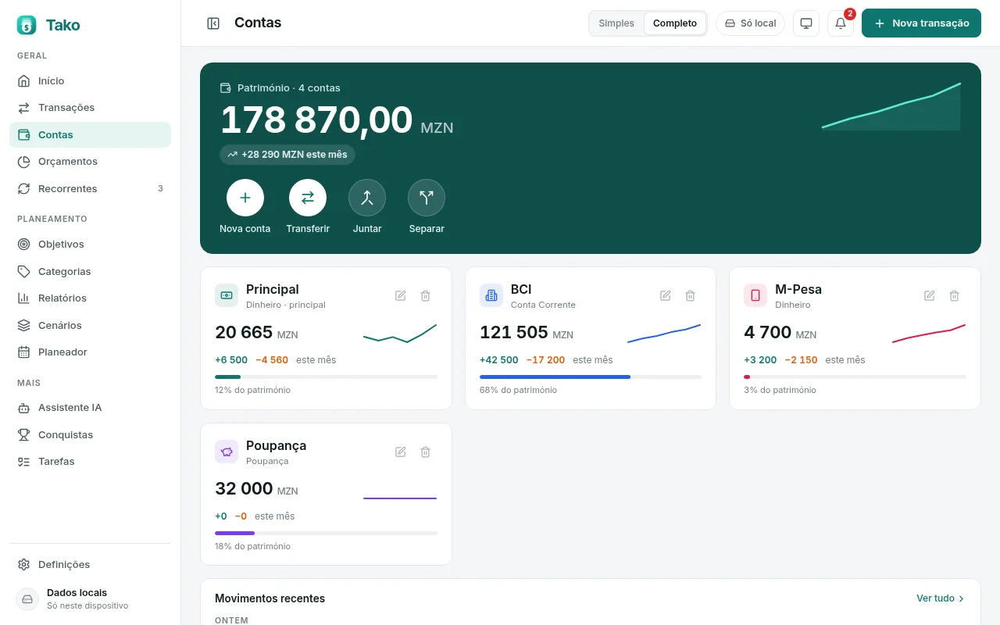
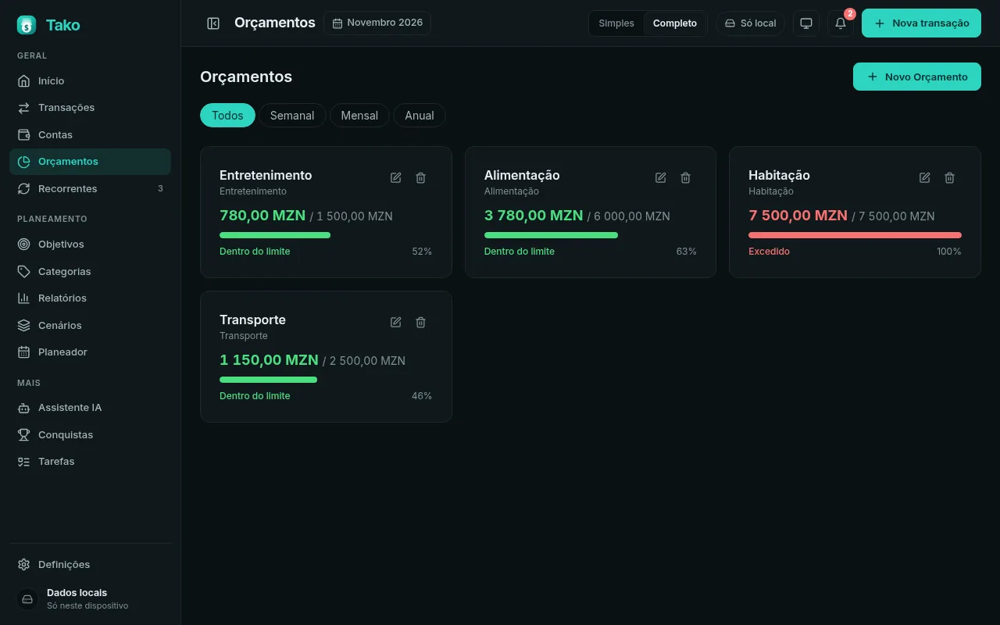
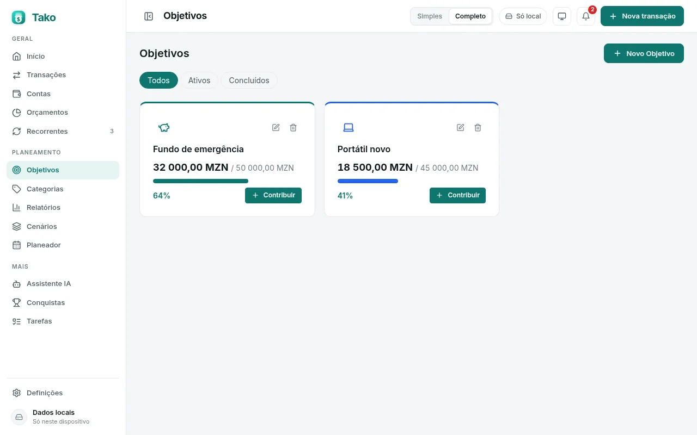
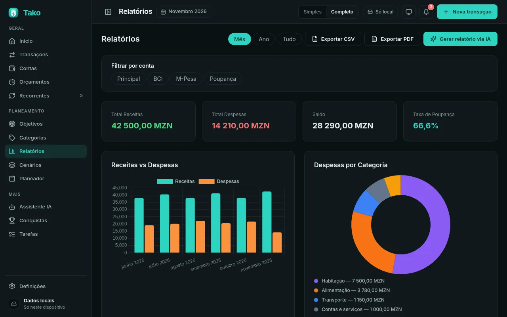
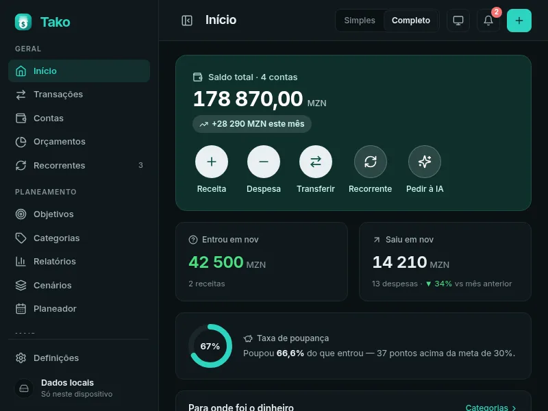

Veja para onde vai cada metical.See where every metical goes.
O Tako junta o mês num só ecrã: contas, transações, orçamentos e objetivos. Feito para quem pensa em meticais — no Windows e como PWA, em português e em inglês.Tako puts the month on one screen: accounts, transactions, budgets and goals. Made for people who count in meticais — on Windows and as a PWA, in Portuguese and English.
Painel de exemplo. O tema do ecrã acompanha o desta página.Sample dashboard. Its theme follows this page.
O mês inteiroThe whole month
Tudo o que o mês pede, sem folha de cálculo.Everything the month asks for, without the spreadsheet.
Da chapa ao fundo de emergência. O Tako cobre o ciclo: registar, classificar, orçamentar, poupar e exportar — com os valores em MT quando é isso que usa no dia a dia.From a minibus fare to an emergency fund. Tako covers the loop: record, classify, budget, save and export — with amounts in MT when that is the money you actually spend.
ContasAccounts
Banco, carteira móvel e poupança no mesmo sítio. Crie contas, transfira entre elas e veja a parte de cada uma no património.Bank, mobile money and savings in one place. Add accounts, transfer between them and see what each one contributes to the total.
TransaçõesTransactions
Receitas, despesas e transferências, com pesquisa e filtros. Os movimentos agendados cobrem o que se repete.Income, expenses and transfers, with search and filters. Scheduled transactions cover what repeats.
Contas a pagarBills to pay
Renda, serviços, prestações. Separe o que ainda tem de sair, para o mês não o surpreender.Rent, utilities, instalments. Set aside what still has to leave, so the month does not catch you out.
Categorias, regras e modelosCategories, rules and templates
Organize por categoria. Regras de categorização e modelos tratam dos lançamentos que já conhece.Sort by category. Categorisation rules and templates take care of the entries you already recognise.
OrçamentosBudgets
Limites semanais, mensais ou anuais. Alertas quando passa do teto, e o que sobra transita para o período seguinte.Weekly, monthly or yearly limits. Alerts when you go past the ceiling, and whatever is left rolls into the next period.
ObjetivosGoals
Fundo de emergência, um portátil, uma viagem. Defina a meta em MT e contribua ao seu ritmo.An emergency fund, a laptop, a trip. Set the target in MT and add to it at your own pace.
RelatóriosReports
O mês, o ano ou tudo. Exporte CSV, PDF e Excel, e filtre por conta antes de partilhar.The month, the year, or everything. Export CSV, PDF and Excel, and filter by account before you share it.
Moedas e línguasCurrencies and languages
Meticais no centro, e outras moedas quando o dinheiro não vem todo na mesma unidade. A interface fala português e inglês.Meticais at the centre, and other currencies when the money is not all in one unit. The interface speaks Portuguese and English.
No computador e no bolsoOn the desk and in a pocket
Tema claro e escuro. Aplicação de secretária para Windows e PWA. O que muda num separador acompanha os outros.Light and dark themes. A Windows desktop app and a PWA. A change in one tab stays in step with the others.
Subscrições, a caminhoSubscriptions, on the way
Uma vista para o que é subscrito: conversão de dólar para metical e totais do mês e do ano. Ainda não faz parte da versão 1.2.0.A view for what you subscribe to: US dollar to metical conversion, plus monthly and yearly totals. Not part of version 1.2.0 yet.
A aplicaçãoThe app
Ecrãs reais, com dados de exemplo.Real screens, with sample data.
Os valores que vê — chapa, Credelec, M-Pesa, Shoprite — ilustram o dia a dia. Não são um extrato de ninguém.The figures you see — a minibus fare, electricity, mobile money, a shop — illustrate an ordinary month. They are not anyone’s real statement.
Cada lançamento no seu lugarEvery entry in its place
Pesquise, filtre por tipo e percorra o histórico. Transferências e movimentos agendados vivem na mesma lista.Search, filter by type and walk the history. Transfers and scheduled entries live on the same list.
Pesquisa por textoSearch by text
Despesas, receitas e transferênciasExpenses, income and transfers
Movimentos agendadosScheduled transactions

Tema claro da aplicaçãoApp in the light theme
Património em peçasNet worth, in pieces
No exemplo: dinheiro do dia a dia, banco, carteira móvel e poupança. Cada conta mostra o saldo, o movimento do mês e a sua parte no total, em MZN.In the sample: everyday cash, a bank, mobile money and savings. Each account shows its balance, the month’s movement and its share of the total, in MZN.
Várias contas lado a ladoSeveral accounts, side by side
Transferir entre contasTransfer between accounts
Totais em meticaisTotals in meticais

Tema claro da aplicaçãoApp in the light theme
Um teto, e um aviso a tempoA ceiling, and a warning in time
Veja o que está dentro do limite e o que já excedeu. Os alertas e o saldo que transita levam o orçamento de um período ao seguinte.See what is inside the limit and what has already gone past it. Alerts and rollover carry a budget from one period into the next.
Semanal, mensal e anualWeekly, monthly and yearly
Alerta quando o limite é excedidoAn alert when the limit is exceeded
O remanescente passa ao período seguinteWhat is left rolls into the next period

Tema escuro da aplicaçãoApp in the dark theme
Poupar com um destinoSave toward something
Cada objetivo mostra quanto já está junto e quanto falta, em MT. Contribua quando puder — o progresso fica visível.Each goal shows what is already set aside and what is left, in MT. Add to it when you can — the progress stays visible.
Meta e contribuiçõesA target, and contributions
Progresso à vistaProgress you can see
Vários objetivos ao mesmo tempoSeveral goals at once

Tema claro da aplicaçãoApp in the light theme
Números que pode levar consigoNumbers you can take with you
Receitas contra despesas, despesas por categoria, filtro por conta. Exporte em CSV, PDF ou Excel.Income against expenses, spending by category, filter by account. Export CSV, PDF or Excel.
Mês, ano ou tudoMonth, year, or everything
CSV, PDF e ExcelCSV, PDF and Excel
Filtro por contaFilter by account

Tema escuro da aplicaçãoApp in the dark theme
O mesmo Tako, em menos larguraThe same Tako, in less width
A aplicação reorganiza-se em ecrãs estreitos. No telemóvel, use-a como PWA no navegador. O botão de descarregamento desta página continua a ser o instalador Windows.The app rearranges itself on a narrow screen. On a phone, use it as a PWA in the browser. The download button on this page is still the Windows installer.
Saldo, entradas e saídas à mãoBalance, money in and money out, close at hand
PWA, a partir do navegadorA PWA, from the browser
Instalador de secretária só para WindowsThe desktop installer is Windows only

Tema escuro, ecrã estreitoDark theme, narrow screen
GaleriaGallery
Abra cada ecrã.Open any screen.
O painel muda de tema com esta página. Os outros ecrãs estão na versão clara ou escura que temos para mostrar.The dashboard follows this page’s theme. The other screens are shown in the light or dark version we have.
Os seus números ficam consigo.Your figures stay with you.
O Tako trabalha no seu dispositivo. A nuvem só entra se a pedir, e entra cifrada.Tako works on your device. The cloud only comes in if you ask, and it comes in encrypted.
Dados locaisLocal data
Por omissão, os dados ficam neste dispositivo. O Tako indica quando está em modo só local.By default, data stays on this device. Tako tells you when it is in local-only mode.
Google Drive cifradoEncrypted Google Drive
Se quiser os mesmos dados noutro computador, a sincronização com o Google Drive vai cifrada.If you want the same data on another computer, Google Drive sync is encrypted.
Entre separadoresAcross tabs
Duas janelas abertas não se afastam. As alterações sincronizam entre separadores.Two open windows do not drift apart. Changes sync between tabs.
Windows · 64 bitsWindows · 64-bit
Instalar o Tako 1.2.0Install Tako 1.2.0
A aplicação de secretária para Windows, feita com Electron. Um instalador.The Windows desktop app, built with Electron. One installer.
O instalador é para Windows de 64 bits. No telemóvel, ou noutro sistema, o Tako também corre como PWA no navegador. Esta página não indica um preço.The installer is for 64-bit Windows. On a phone, or on another system, Tako also runs as a PWA in the browser. This page does not list a price.
Versão 1.2.0Version 1.2.0
Aplicação Electron para Windows de 64 bitsElectron app for 64-bit Windows
Tema claro e escuro, português e inglêsLight and dark themes, Portuguese and English
Dados no dispositivo, com sincronização cifrada se a ativarData on the device, with encrypted sync if you turn it on
Por omissão, neste dispositivo. O Tako mostra quando está só local. A sincronização com o Google Drive é opcional e cifrada — serve para ter os mesmos dados noutro computador.On this device, by default. Tako shows when it is local only. Google Drive sync is optional and encrypted — it is there so you can keep the same data on another computer.
O que sincroniza entre separadores?What syncs between tabs?
As alterações feitas numa janela passam para as outras janelas abertas do Tako, para as duas não divergirem.A change made in one window is carried to the other open Tako windows, so the two do not drift apart.
Posso usar o Tako no telemóvel?Can I use Tako on a phone?
Sim, como PWA: a partir do navegador, e o ecrã adapta-se a larguras menores. O botão de descarregamento desta página é o instalador para Windows, não uma aplicação de loja móvel.Yes, as a PWA: from the browser, and the screen adapts to a narrower width. The download button on this page is the Windows installer, not a mobile-store app.
O que inclui a versão 1.2.0 para Windows?What is in the Windows 1.2.0 release?
A aplicação de secretária (Electron), num instalador de 64 bits: Tako-1.2.0-x64-Setup.exe. Contas, transações — incluindo transferências e agendadas —, categorias com regras e modelos, orçamentos com alertas e saldo que transita, objetivos, contas a pagar, relatórios em CSV, PDF e Excel, várias moedas, português e inglês, e tema claro e escuro.The desktop app (Electron), in a 64-bit installer: Tako-1.2.0-x64-Setup.exe. Accounts, transactions — including transfers and scheduled ones — categories with rules and templates, budgets with alerts and rollover, goals, bills, CSV, PDF and Excel reports, multiple currencies, Portuguese and English, and light and dark themes.
As subscrições já estão disponíveis?Are subscriptions available yet?
Ainda não. Subscrições — acompanhar serviços, converter USD para metical e ver totais mensais e anuais — é uma funcionalidade a caminho. Não faz parte da versão 1.2.0.Not yet. Subscriptions — tracking services, converting USD to metical and seeing monthly and yearly totals — are on the way. They are not part of version 1.2.0.
Em que línguas e moedas funciona?Which languages and currencies?
Em português e inglês. Suporta várias moedas. Os exemplos deste site estão em meticais (MZN), também escritos como MT.Portuguese and English. It supports multiple currencies. The examples on this site are in meticais (MZN), also written as MT.
Esta página tem um preço?Does this page list a price?
Não. O Tako 1.2.0 está disponível para descarregar para Windows, e esta página não publica um preço.No. Tako 1.2.0 is available to download for Windows, and this page does not publish a price.